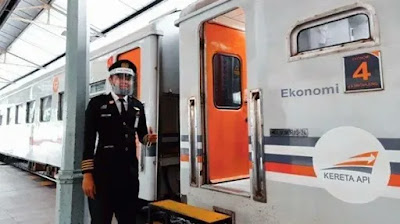

Meski telah beroperasi, PT KAI mewajibkan bagi para calon penumpang kereta api baik jarak jauh maupun dekat untuk memenuhi sejumlah persyaratan. Untuk bisa melakukan perjalanan memggunakan moda transportasi Kereta Api, calon penumpang diharuskan melengkapi beberapa syarat yang tertuang dalam Surat Edaran Gugus Tugas Covid-19 No 7 Tahun 2020.
Dilansir dari laman Kai.id, berikut 12 syarat naik kereta api jarak jauh/dekat saat new normal :
- Menunjukkan surat keterangan uji tes PCR dengan hasil negatif atau surat keterangan uji rapid-test dengan hasil non reaktif yang berlaku 14 hari pada saat keberangkatan.
- Menunjukkan surat keterangan bebas gejala seperti influenza (influenza-like illness) yang dikeluarkan oleh dokter rumah sakit/puskesmas bagi daerah yang tidak memiliki fasilitas test PCR dan/atau rapid-test.
- Penumpang dalam kondisi sehat tidak menderita flu, pilek, batuk dan demam.
- Penumpang wajib menggunakan masker. Masker wajib dipakai dari zona 1 (satu), zona 2 (dua), zona 3 (tiga) pada area stasiun keberangkatan dan kedatangan serta pada saat perjalanan diatas kereta api.
- Suhu badan penumpang tidak lebih dari 37,3 derajat celcius.
- Penumpang menggunakan pakaian pelindung (jaket atau pakaian lengan panjang).
- Untuk penumpang kereta api lokal atau komuter, berlaku hanya ketentuan poin 4 - 7 di atas dan tetap wajib menerapkan dan mematuhi protokoler kesehatan yang telah ditentukan oleh perusahaan.
- PT KAI akan memberikan faceshield kepada penumpang dan penumpang wajib menggunakan faceshield tersebut dari stasiun keberangkatan, dalam perjalanan sampai dengan zona 2 (dua) stasiun tujuan.
- Khusus penumpang bayi atau infant wajib membawa faceshield sendiri.
- Apabila pada saat boarding persyaratan dari poin 1 sampai dengan 8 tidak terpenuhi maka penumpang dapat membatalkan tiket di loket stasiun dengan pengembalian bea sebesar 100% di luar bea pemesanan.
- Penumpang wajib mengikuti dan mematuhi instruksi petugas, baik selama di stasiun maupun di atas kereta.
- Calon penumpang dihimbau datang lebih awal ke stasiun paling lambat 30 menit sebelum jadwal keberangkatan kereta api untuk selanjutnya melakukan proses boarding dan verifikasi syarat ketentuan perjalanan orang dalam masa adaptasi kebiasaan baru menuju masyarakat produktif dan aman dari COVID-19.